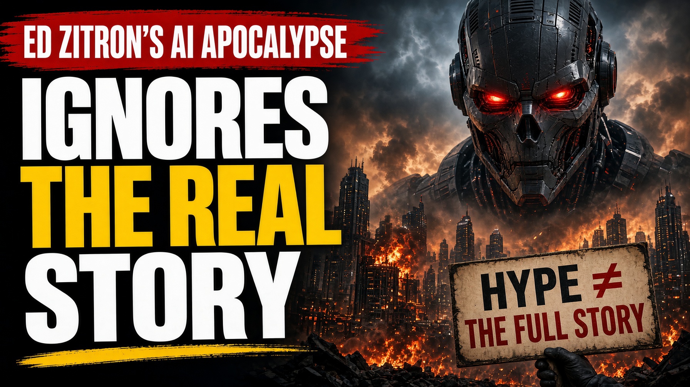

Ed Zitron’s AI Apocalypse Ignores the Real Story

Ed Zitron has been running from interview to podcast making a case against the AI boom. It’s tidy, loud, and easy to cut into short scary TikTok clips.
OpenAI is burning cash at scale. A failed IPO or funding would hurt SoftBank, Microsoft, and everyone downstream. Big Tech’s GPU spend is being overpriced. Venture valuations are paper. Nvidia’s financing loops are circular. Index funds mean your pension sits on a stack of chips.
All true in the short run and completely misses the long game.
The AI industry isn’t only selling a service, it’s building a dependency. Once that dependency takes root in business and a generation that replaced Google Search with chatbots. They will pay what it takes to keep it alive.
Zitron treats OpenAI’s capital needs as evidence that the whole project is hollow. Cash spend is real, same as the forming habit.
Enterprises have already wired copilots into coding, support, security, analytics, and more. Teams that used to wait on tickets now ship with AI in the loop. Pull that out and you lose throughput, response time, and the new baseline of “normal”.
Organizations don’t casually return to the old baselines. They renegotiate contracts, switch vendors, cut elsewhere, or accept higher prices. They don’t delete the dependency because a podcast said the economics are messy.
Same goes for the younger workers. A generation is learning to write, code, research, and decide with AI. It’s a sticky skill. Sticky demand is what lets expensive infrastructure survive the hard years.
Zitron’s “OpenAI as ground zero” story assumes that if one flagship firm stumbles, belief evaporates and the market re-evaluates everything. Markets do and will continue to punish overvaluation. That doesn’t mean users abandoning tools.
If OpenAI hiccups, Anthropic, Google, Microsoft, and others compete to absorb the workload. Dependency requires that someone keep everything running. Capital follows the forced demand created by dependency.
Circular GPU financing can inflate demand. Skepticism is 100% deserved. They don’t, however, erase the fact that millions now organize their day around generative tools.
Retail investors are exposed. The concentration argument cuts both ways: the same companies that could fall hardest are also the ones with distribution, cloud, and cash to keep running.
People don’t only buy tools. They build habits, expectations, and reliance. AI companies are not raising money for a narrative. They are inserting themselves into the daily workflows and habits.
When it sticks, the industry doesn’t need eternal hypergrowth to survive. It needs customers who can’t go back. Those customers are forming now. And when the bill comes due, they will pay what they need to keep it going.